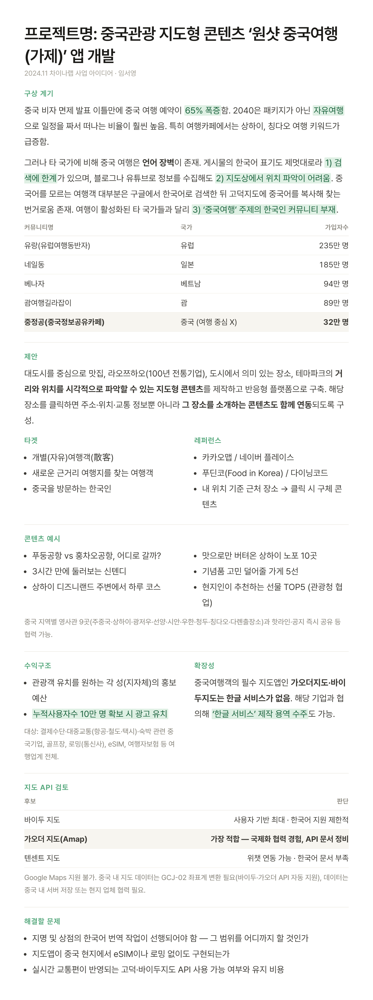

수요는 즉시 열렸지만, 공급은 0이었습니다. 일본이나 동남아와 달리 중국은 한 번도 무비자였던 적이 없는 여행지였고, 그래서 한국어로 된 중국 여행 정보를 모아둔 플랫폼이 아예 존재하지 않았습니다. 정보가 부족한 게 아니라, 정보를 모을 그릇이 없었습니다.
동시에 그 공백을 메울 자산은 이미 우리 회사 안에 있었습니다. 중국 현지 취재력, 중국 비즈니스 네트워크, 중국어 가능 인력. 다른 여행 플랫폼이 중국을 '여러 목적지 중 하나'로 다룰 때, 우리는 중국만 다뤄온 조직이었습니다.
그래서 제가 정의한 문제는 "중국 여행 정보가 없다"가 아니라 "이 시장을 선점할 수 있는 창이 몇 달밖에 열려 있지 않다"였습니다. 완성도보다 속도가 중요한 국면이라고 판단했고, 사업 기획안을 제출해 무비자 시행 18일 만에 커뮤니티를 열었습니다.
첫 기획안은 '중국판 푸딘코 지도'였습니다. 여행 콘텐츠는 결국 지도에서 시작한다고 봤고, 우리 취재력과 현지 네트워크를 쏟아부어 중국의 미식과 엔터를 한눈에 보는 지도를 만들고 싶었습니다.
그런데 실행 직전에 순서를 뒤집었습니다.
지도는 '무엇을 찾을지 아는 사람'을 위한 도구입니다. 무비자 직후의 사용자는 그 단계가 아니었습니다. 비자가 정말 필요 없는지, 알리페이는 어떻게 쓰는지, 입국카드는 뭔지 — 아직 질문 단계에 있는 사람들이었습니다. 이들에게 지금 필요한 건 정리된 지도가 아니라 물어볼 곳, 그리고 정확한 답이 돌아오는 곳이라고 판단했습니다.
그래서 지도를 유보하고 커뮤니티를 먼저 열었습니다.
1년 뒤, 이 판단을 검증할 수 있었습니다. 커뮤니티에 쌓인 질문 패턴이 결국 "어디 가지 / 뭐 먹지"로 수렴했고, 그 시점에 지도를 버티컬 서비스로 출시했습니다. 처음 가설이 틀렸던 게 아니라 순서가 틀렸던 것이었고, 커뮤니티가 지도의 콘텐츠와 수요를 동시에 만들어준 셈이 됐습니다.

유니온페이, 동방항공, 트립닷컴, 알리익스프레스 트립, 마이리얼트립, 여행가자, 유심사 등 OTA·항공·결제사로부터 광고 집행 요청 인바운드가 들어왔고, 커뮤니티에서 검증된 수요를 근거로 지도 서비스를 버티컬로 출시했습니다.
커뮤니티에서 검증된 질문을 그대로 예약 가능한 상품으로 연결했습니다. 광고 예산 없이, 콘텐츠 안의 링크만으로 만든 수치입니다.
노출 총량을 늘리기 위해 '중여커 호텔 지도'에 어필리에이트 링크를 모두 연동시켜두었고, 회원들의 질문은 반드시 서비스로 연결시키고자 했습니다. 방문자 896명 중 37명이 실제 결제까지 이어졌으며, 1회 예약 평균 금액은 US$326입니다.
다만 목표는 달성하지 못했습니다. 상반기까지 8만 명이 목표였고, 지도 서비스를 통해 추가 모객을 끌어올 계획이었으나 미달했습니다.
목표 미달의 원인을 뜯어보다 발견한 건, 광고 효율이나 콘텐츠 양의 문제가 아니었습니다.
사람들은 '게시된' 정보를 읽지 않습니다. 공지에 상시 떠 있는 내용을 그대로 다시 묻고, 카페 내 검색어 한 번이면 나오는 것을 또 묻습니다. 정보는 충분히 만들었지만, 그 정보가 필요한 사람에게 필요한 순간에 다시 나타나게 하는 구조를 만들지 않았습니다. 콘텐츠의 문제가 아니라 바이럴과 전달 구조의 문제였습니다.